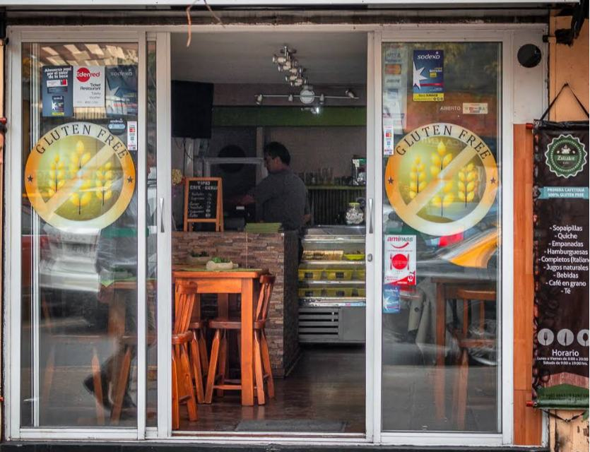
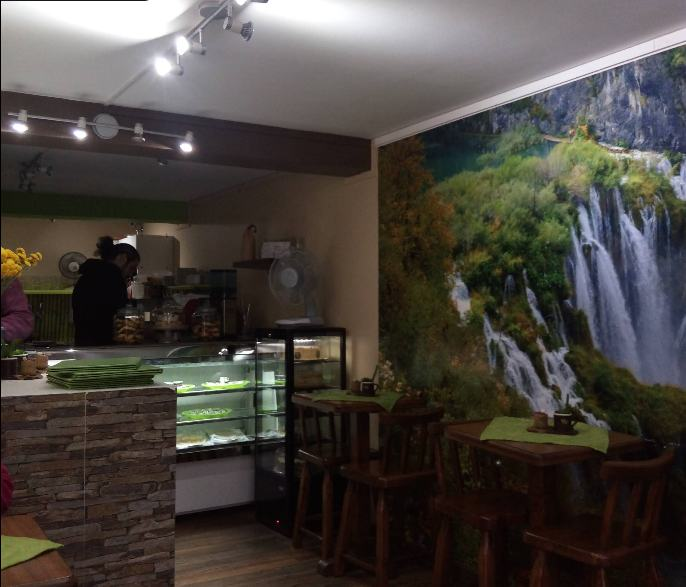
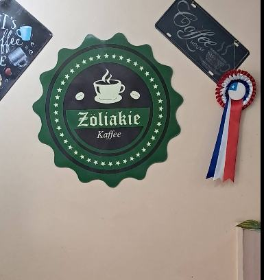
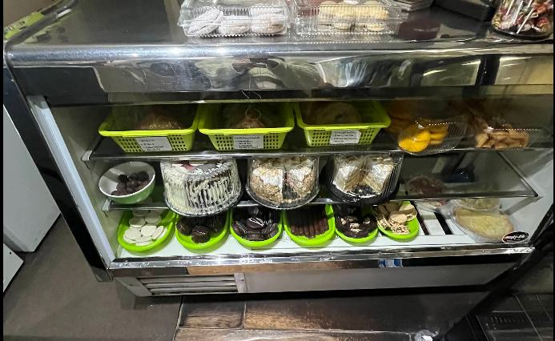
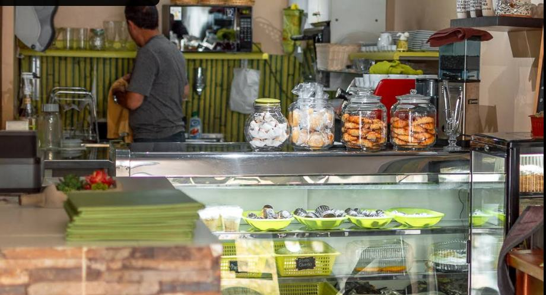
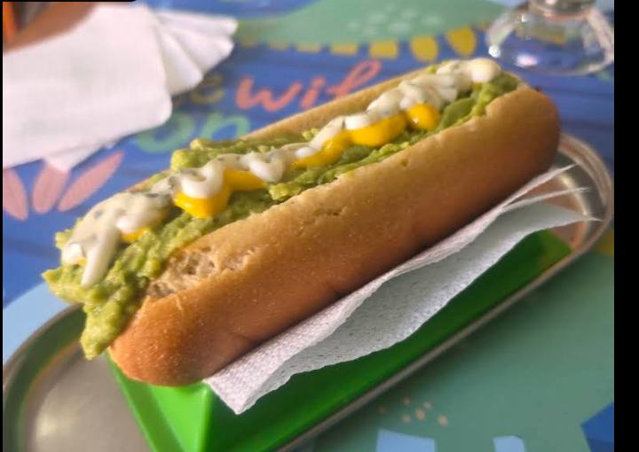

100% Gluten Free,
100% sabor.
Calidad y servicio incomparables para quienes viven sin gluten — sin miedo a la contaminación cruzada, en un ambiente pequeño y hogareño.
Pensado para celíacos
El local trabaja 100% libre de gluten — no hay riesgo de contaminación cruzada, algo que nuestros propios clientes celíacos destacan como lo más valioso.
Dulce y salado
Desde empanadas y completos hasta tortas, alfajores y hamburguesas — la carta clásica chilena, recreada 100% sin gluten.
Trato cercano
Un local pequeño y hogareño donde el servicio atento hacia quienes tienen restricciones alimentarias es la razón número uno por la que la gente vuelve.
Beneficios estudiantiles y laborales
El local acepta JUNAEB (almuerza aquí por el valor de tu beca), Edenred Ticket Restaurant y Sodexo — visible en la puerta de entrada.
Una de las primeras cafeterías 100% libres de gluten de Santiago
Zöliakie Kaffee nació en Providencia con una idea simple: que las personas celíacas y con intolerancia al gluten puedan sentarse a comer tranquilas, sin tener que preguntar dos veces si algo "tiene trazas". Fue una de las primeras cafeterías de la ciudad en declararse 100% Gluten Free.
El local es pequeño y hogareño — así lo describen quienes llegan por primera vez — y ese tamaño acotado es justamente lo que permite un control estricto de la cocina para evitar la contaminación cruzada, el mayor temor de cualquier persona celíaca al comer fuera de casa.
La carta mezcla clásicos chilenos (empanadas, completos, sándwiches) con pastelería propia — tortas, alfajores y galletas — todo preparado sin gluten, para que comer algo rico deje de ser sinónimo de restricción.

"Siempre estoy buscando lugares que sean 100% Sin Gluten, esta cafetería es uno de ellos. La mejor atención y la comida que mi madre más ha disfrutado, el hecho de poder comer sin miedo a la contaminación cruzada es impagable."
— María Paz Mardones, reseña real en Google Maps



Nuestra Carta
Carta real de Zöliakie Kaffee, con los precios tal como están en el local. Los platos especiales sin azúcar (como la torta panqueque con alulosa que destacan varias reseñas) se preparan bajo pedido — consulta disponibilidad directo en el local o por WhatsApp/Instagram.
Reseñas reales
"Siempre estoy buscando lugares que sean 100% Sin Gluten, esta cafetería es uno de ellos. La mejor atención y la comida que mi madre más ha disfrutado, el hecho de poder comer sin miedo a la contaminación cruzada es impagable. Un ambiente pequeño, hogareño y con muy buenas vibras. Si eres celíac@ al nivel máximo, este local es para ti, para que comas tranquilo, rico y barato."
"Compré para llevar un snicker y es realmente excelente. Volveré para probar salado. Atienden muy bien y es ideal para quienes somos celiacos."
"Compré torta panqueque naranja sin azúcar, con alulosa, estaba deliciosaaaa (soy super mañosa pero me encantó) y el señor que atiende es muy amable y simpático."
¿Ya nos visitaste?
Escribe tu reseña en GoogleVisítanos
Dirección
Av. Providencia 2546, Providencia
Entre Luis Thayer Ojeda y Holanda — a pasos del Metro Tobalaba
Horario
- Lunes9:00 – 20:00
- Martes9:00 – 20:00
- Miércoles9:00 – 20:00
- Jueves9:00 – 20:00
- Viernes9:00 – 20:00
- Sábado9:00 – 19:00
- DomingoCerrado
Contacto
Escríbenos por WhatsApp o Instagram para consultas y pedidos.